Mina Kim
I study how institutional contexts shape the governance of regional innovation, with a focus on the relationship between state intervention, civic participation, and spatial inequality. My work spans regional innovation, collaborative governance, community economic development, and international development, drawing on social network analysis, GIS, and computational text analysis. My current research extends this agenda into the paradigm of platform urbanism, examining how digital civic infrastructure reshapes the conditions for democratic participation across different institutional settings.
Education
Research
Regional Innovation Policy
Innovation ecosystems, social innovation clusters, agglomeration economies, smart city policy
Economic Geography
Spatial disparities in innovation, urban agglomeration, technology diffusion, regional development
Collaborative Governance
Co-creation governance, collaborative networks, university-community partnerships, co-production
International Development
Official Development Assistance (ODA), ICT for development, program evaluation, community development
Agglomeration Economies in Social Economy Clusters
Networks and Agglomeration Dynamics in a State-Led Social Innovation Cluster
How does government intervention shape network structure and the dynamics that flow through it? This dissertation examines Seoul Innovation Park, a 100,000 m² social innovation cluster where approximately 600 social economy organizations formed partnerships from 2015 to 2020. Through social network analysis, survival modeling, and in-depth interviews, it investigates three dimensions: the evolution of governance networks, the relationship between network diversity and organizational survival, and the agglomeration mechanisms of matching, sharing, and learning.
Experience
Portfolio
Q Methodology Web Tool for Field Research
Developed a web-based Q Methodology tool designed for international development field settings. The tool enables practitioners to systematically capture and analyze stakeholder perspectives and community discussions on-site, without requiring specialized software or statistical expertise. Built to support evidence-based policy implementation in ODA projects where understanding local voices is critical to program design and evaluation.
Housing Equity Research: Asian Residents in Washington County
Investigated disparities in housing service access among Asian residents in Washington County through mixed methods. Conducted quantitative analysis of Representation Index across Coordinated Entry, Homeless Programs, and Rental Assistance using SHS program data linked with ACS indicators, combined with Q Methodology and focus group interviews to identify structural barriers including language exclusion, digital access gaps, and institutional distrust.


Manufacturing Extension Partnership (MEP) Research
Developed a Manufacturing Innovation Index to assess technology adoption and workforce development across the MEP national network. Analyzed service delivery patterns by state using text analysis on project records and mapped spatial variation in advanced technology adoption.
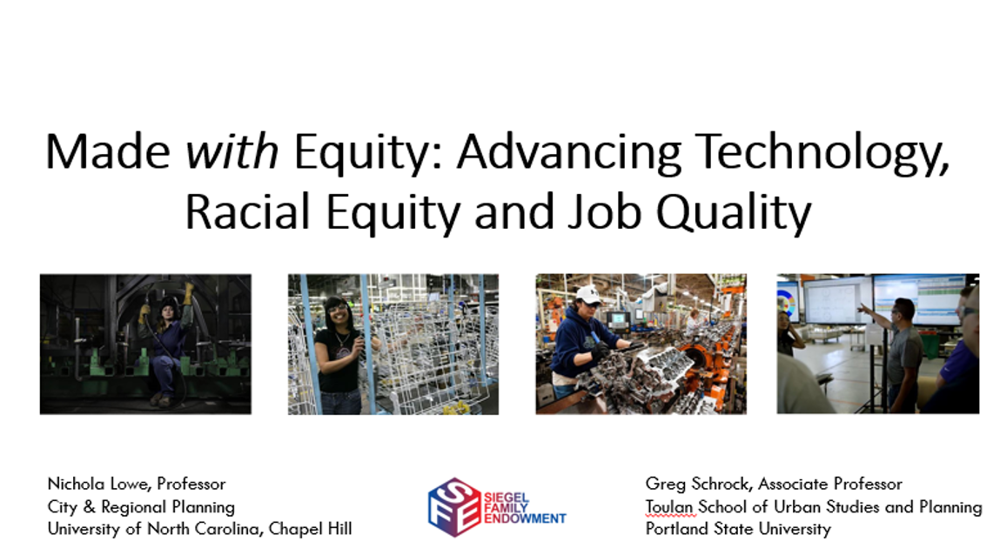
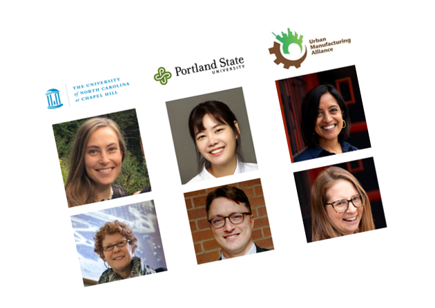
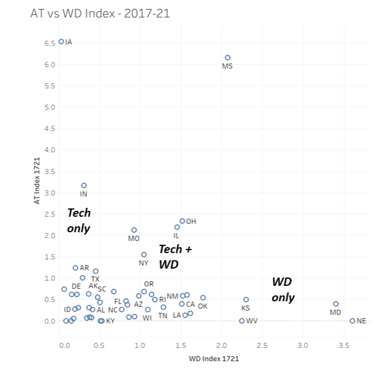
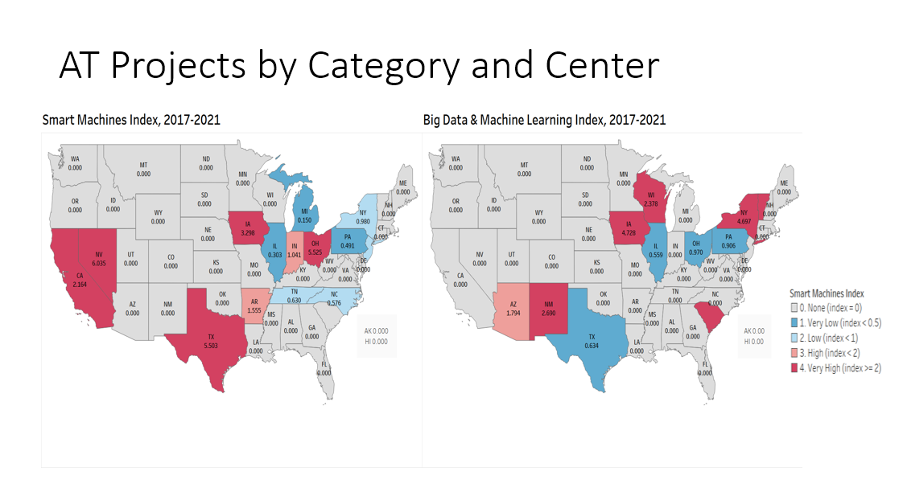
Unsheltered Homelessness Service Area Analysis
Examined spatial accessibility to shelters for people experiencing winter unsheltered homelessness in Multnomah County, Portland. Defined service areas based on shelter proximity and MAX transit stations, and profiled subpopulation characteristics within and outside service areas.
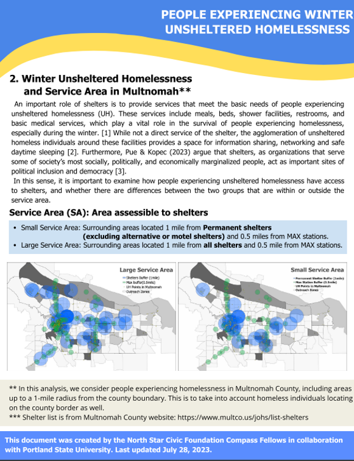
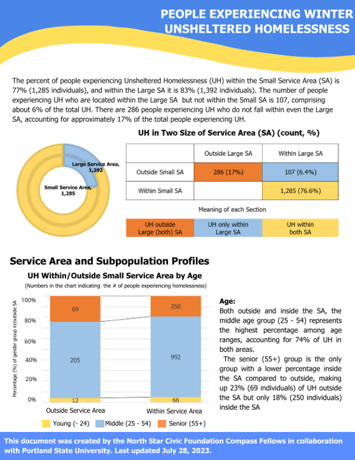
Spatial Analysis of Social Entrepreneurship in Seoul
Examined the formation factors of regional social entrepreneurship across Seoul's 25 districts using spatial regression analysis. Tested economic, political, and social determinants of social enterprise concentration through OLS regression, spatial autocorrelation (Moran's I), and Hot Spot Analysis (Getis-Ord Gi*). Findings revealed a substitutive relationship between government social expenditure and social enterprise activity.
Durham-Chapel Hill MSA Regional Economic Strategy
Conducted a comprehensive regional economic analysis of the Durham-Chapel Hill Metropolitan Statistical Area, including shift-share analysis, migration trends, occupation and worker analysis, and innovation environment assessment using the Research Triangle framework.
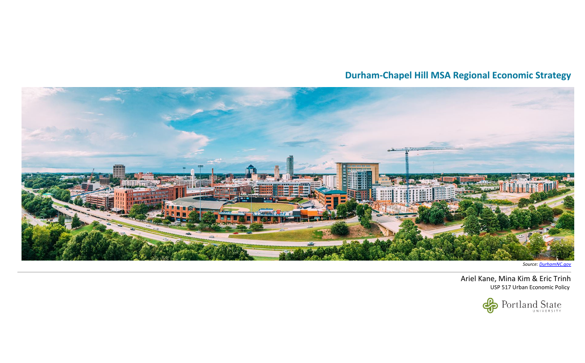
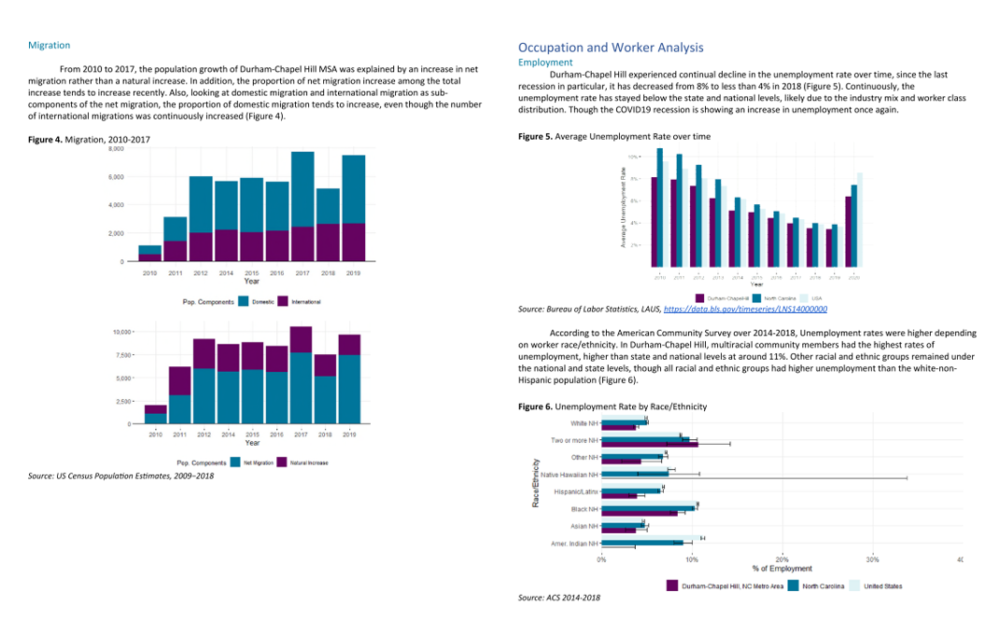
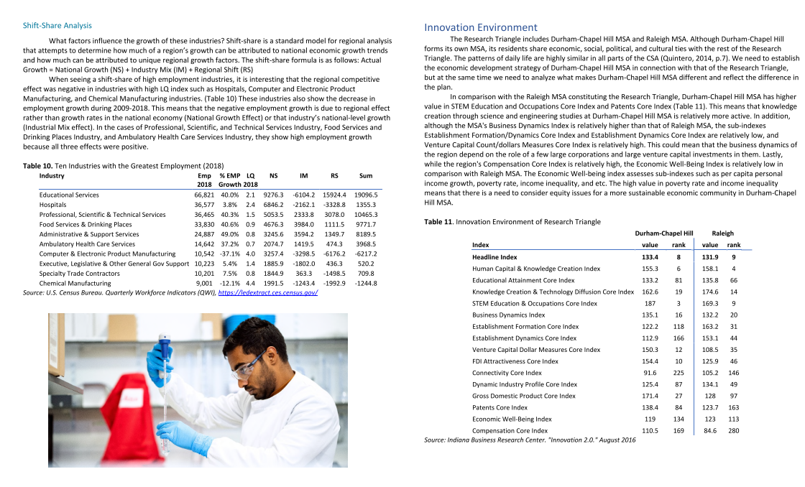
Digital Divide in Indonesia: ICT International Development
Analyzed Indonesia's digital divide using ITU ICT Development Index and WEF Network Readiness Index profiles. Conducted SWOT analysis to identify strategic entry points for ICT-related international development cooperation projects.
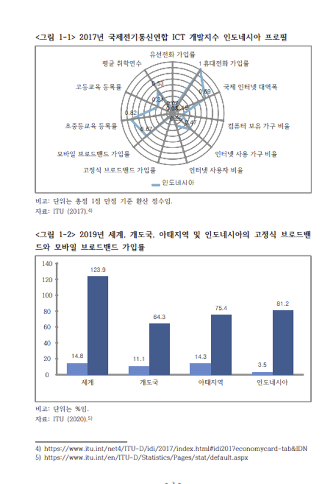
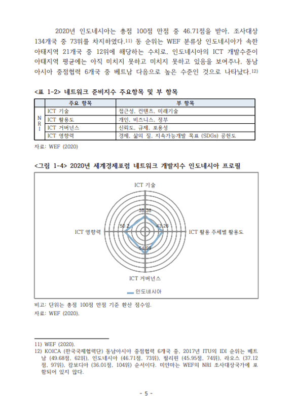
End-of-Project Evaluation: Mongolia Mineral Resources Master Plan
Conducted end-of-project evaluation for the establishment of a master plan for mineral resources, infrastructure development, and financing requirements of Mongolia. Assessed relevance, effectiveness, efficiency, impact, and sustainability using DAC evaluation criteria.
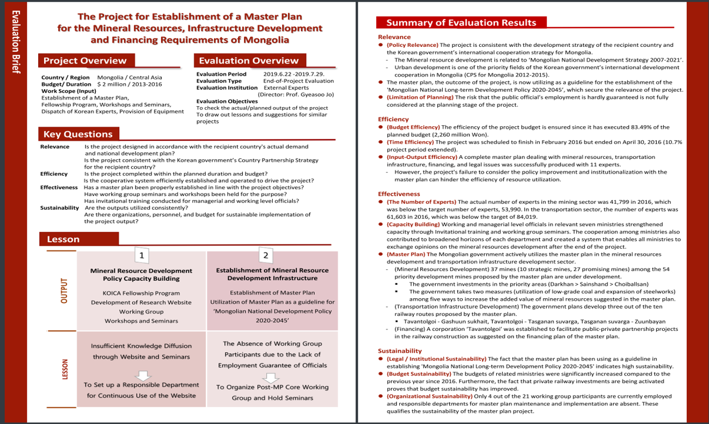